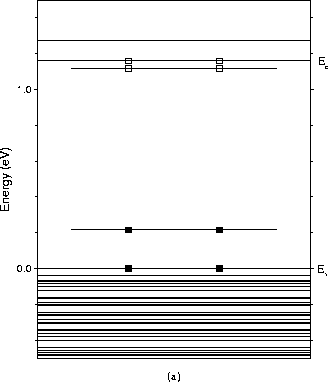
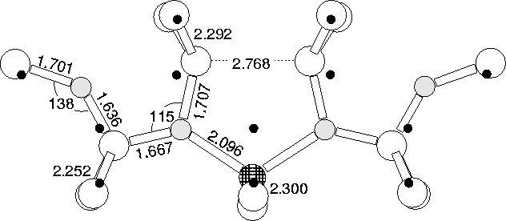

| 3cLocal Vibrational Modes (cm-1) | Dipole moment squared | ||
| 16O | 17O | 18O | for 16 O |
| 1127.0 | 23.9 | 45.8 | 0.093 |
| 1062.1 | 18.4 | 34.9 | 0.308 |
|---|---|---|---|
| 973.4 | 18.9 | 34.2 | 0.022 |
| 945.5 | 17.6 | 35.2 | 0.219 |
| 933.8 | 18.7 | 35.7 | 0.271 |
| 917.3 | 18.3 | 35.2 | 0.143 |
| 849.2 | 17.6 | 33.6 | 0.035 |
| 827.7 | 14.4 | 27.7 | 0.019 |
| 652.1 | 2.5 | 4.9 | |
| 643.1 | 9.1 | 17.4 | |
| 630.3 | 0.2 | 0.4 | |
| 591.0 | 1.3 | 2.8 |
Several of these thermal donor structures feature a core Si atom surrounded by oxygen atoms, notably the di-y-lid model. In this structure the core Si would be a prime candidate for substitution by Al. For full background description of the NL10(Al) defect, see Chapter 8.
|  |
|  |
When we relaxed this structure we found it to be stable in a single positive charge state, where it possessed a (now depopulated) level very close to the conduction band, in agreement with experiment. It also has a filled singlet quite close to the valence band (see Figure 9.15).
It possesses the correct symmetry of approximately C2v (there are small out of plane deviations similar to the di-y-lid discussed above). In addition it has a single Al atom on the C2 axis and no oxygen on this axis, in agreement with ENDOR studies. The relaxed structure is shown in Figure 9.16. There are several variants on the NL10(Al) structure observed [10] which are explainable in terms of Al subsituting for different lattice Si atoms; in the di-y-lid structure there are other Si atoms neighbouring more than one oxygen atom, all of which would be sites suitable for Al attack. Isotopic ENDOR studies led to the conclusion that the local structures around oxygen must be identical for both NL8 and NL10 [10], which is the case in these di-y-lid based models.
Unfortunately there is no unambiguous vibrational data to compare to, so we cannot use this to help strengthen the assignment[265]. However an absorption at 992 cm-1 has been observed in Al-doped Cz-Si which has an integrated absorption intensity linearly proportional to the Al content [239]. This lies mid-way between the absorptions of TD2 and TD3 (988, 999 cm-1 respectively), suggesting that this could be a perturbed form of these early thermal donors. If the AlsO4i complex described here forms from dimer aggregation at Als, then we might expect to first observe the formation of AlsO2i, which could be the source of this absorption. The calculated vibrational modes of AlsO4i are given in Table 9.7 along with the square of their dipole moments.
Substitution for the core Si in the 5O model is also stable, although the structure exhibits slightly more distortion. However this cannot be a model for NL10(Al) since it has O on the C2 axis, in contravention of ENDOR observation[10].
Thus the di-y-lid with Al substituted for the core Si seems a sensible candidate for the NL10(Al), which fits all of the available ENDOR structural restrictions, and possesses a single shallow gap state at around the right value.